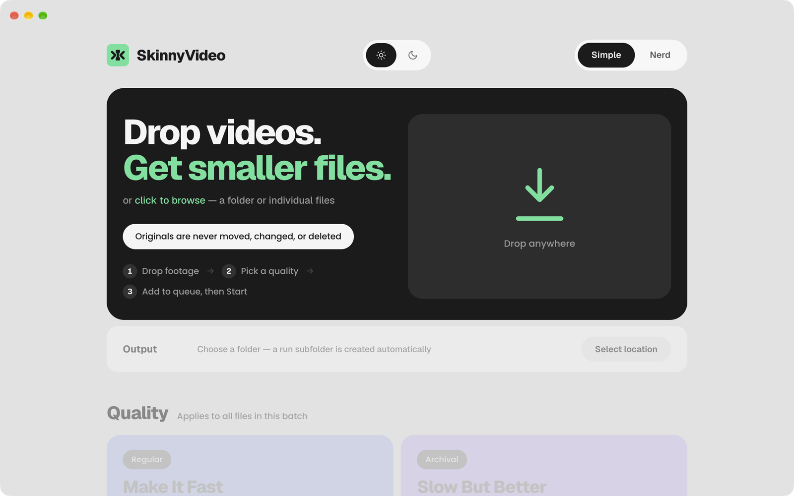
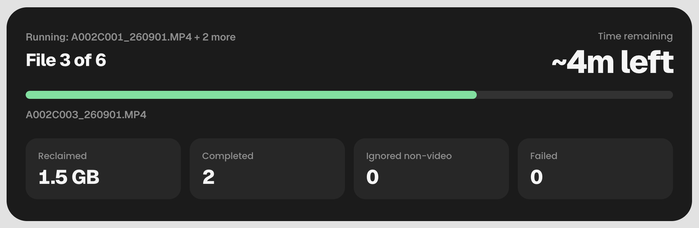
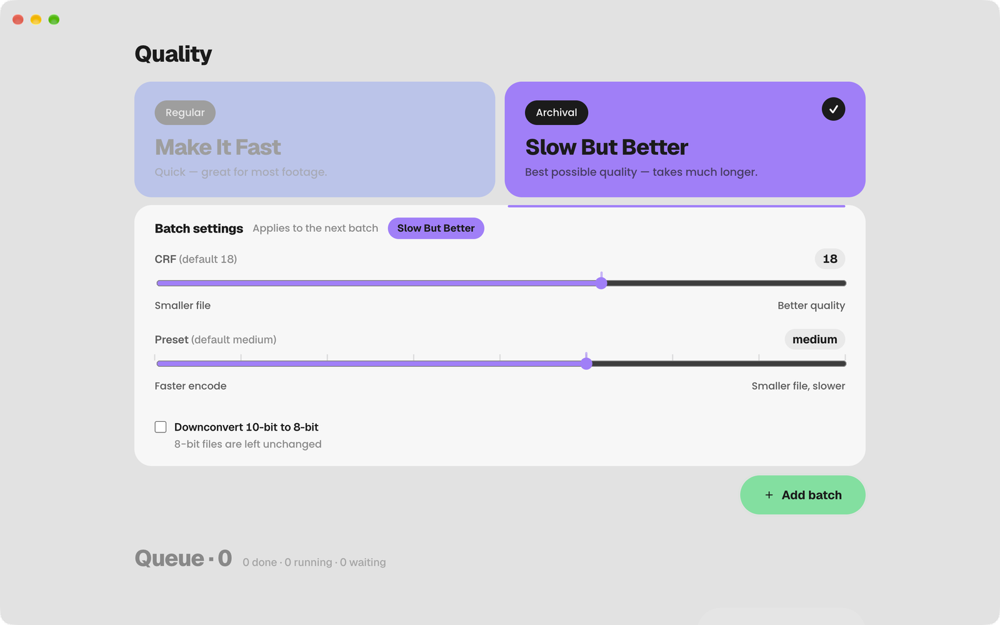

Free and open source. Runs entirely on your Mac.
A free video compressor for Mac. Up to 96% smaller.*
Batch-compress camera footage to HEVC (H.265) on your Mac. Whole folders at once. Two quality choices, no settings to learn, originals never touched.

Results
Compression results on real footage.
Measured on real footage, not a benchmark clip. How we measured
How it works
Compress whole folders at once.
Drop
A folder or a pile of files. Non-video files are ignored, not errors.
Pick a quality
The only decision you make: Make It Fast or Slow But Better.
Make It Fast
Hardware HEVC via Apple VideoToolbox.
Encodes on the media engine in your Mac's chip, so a card dump finishes while you keep editing.
- Encodes faster than the footage plays*
- Mac stays usable
Slow But Better
Software HEVC via x265. Smallest files.
A software encoder that spends more time on every frame for a smaller file. On fanless or lower-core Macs such as MacBook Neo it is noticeably slower, but it completes normally.
- Smaller at the same visible quality
- Uses more of your Mac while it runs
Start
Walk away. Results land in a new Compressed_<date> folder, same names, flat.

Safe by default
Originals never touched.
Nothing leaves your Mac.
Sources are read-only.
Never moved, renamed, changed, or deleted.
Results go to a new folder.
Don't like it? Trash the folder. Your masters are where they were.
Keeps the receipts.
What went in, what came out, reclaimed totals per drive.
Lifetime reclaimed 12 TB total · 2 drives
History 50 batches
Nerd Mode
Nerd Mode. CRF, presets, full encoder control.
Full encoder control for people who know exactly what they want. CRF, presets, quality scale, bit depth, dry runs. Set per batch, never left behind for the next user. Built on a self-compiled FFmpeg with x265 and VideoToolbox, nothing else bundled.

- CRF 0-51 Slow But Better
- Constant-quality control for x265. Default 18. Lower is larger and cleaner.
- ultrafast → veryslow preset
- Nine snap positions. Trade encode time for file size. Default medium.
- Quality 1-85 Make It Fast
- VideoToolbox quality scale. Default 62. Capped at 85, where the bitrate curve goes vertical.
- 10-bit → 8-bit
- Appears only when the batch contains a 10-bit file. 8-bit files are left alone.
- Dry run
- Scan the batch and report the totals. Nothing is written. Check before an overnight job.
- Per batch
- Each batch carries its own settings into the queue. Reset to defaults is one click.
Limits
What it doesn't do.
- Edit, trim, or color anything
- Run on Intel Macs
- Write ProRes, DNx, or AV1
- Watch a folder and compress new files automatically
- Promise "no quality loss". It aims for visually identical.
About
Built by a production manager.
I'm Pritam Malakar, corporate video production manager, and I built SkinnyVideo for my own team. Every tool I tried wanted either a terminal or a dozen decisions before it would touch a single file. Nobody wants to. So: two buttons, no settings, originals untouched.
GPL licensed. Source, releases, and bug tracker are public. No paid tier, no plan for one.
Questions
Questions people ask.
Does it work on Intel Macs?
No. SkinnyVideo runs only on Apple Silicon Macs, including MacBook Neo, on macOS 11 and up.
Does it lose quality?
HEVC is lossy, so yes, technically. Both tiers are tuned to look visually identical; Slow But Better keeps the most detail at the smallest size.
Does it upload my videos anywhere?
No. It runs entirely on your Mac with no internet connection and no telemetry. Your footage never leaves the machine.
Is it safe to install?
Yes. It's signed and notarized by Apple, open source under GPL-2.0-or-later, and every release publishes a SHA-256 checksum.
Where do the compressed files go?
Into a new folder next to your originals. The originals are never opened for writing, moved, or deleted.
Can it compress ProRes?
Yes. A 172 GB ProRes master came out at 6.4 GB with Slow But Better.
Can it compress iPhone video that's already HEVC?
Yes, with smaller gains: 266 MB to 62 MB in our test.
How is it different from HandBrake?
HandBrake is a full manual transcoder with hundreds of settings. SkinnyVideo is folder-first with two choices, and Nerd Mode when you want the settings back.
Download
Get the space back. Free, for Apple Silicon Macs.
Like any other Mac app. Open the .dmg, drag to Applications, launch. Signed and notarized by Apple: no warnings, no workarounds.
* Camera originals: three Sony 4K 25p 10-bit H.264 clips, 2.3 GB → 147 MB (94%), Make It Fast defaults, Mac mini M4 Pro, 5 Sep 2026.
* ProRes: one 172 GB ProRes .mov → 6.4 GB (96%) and one 81 GB → 5.2 GB (94%), Slow But Better defaults, 12 Jun 2026, earlier build of this app.
* Already HEVC: one iPhone HEVC .mov, 266 MB → 62 MB (77%) with Slow But Better; 266 MB → 100 MB (62%) with Make It Fast. Sep 2026.
* Faster than the footage plays: the same three Sony 4K clips, 2 min of footage, encoded in about 29 s on a Mac mini M4 Pro. Speed scales with your chip.
Savings depend on how much your footage moves and how hard the camera compressed it. The app reports the real figure after every batch.